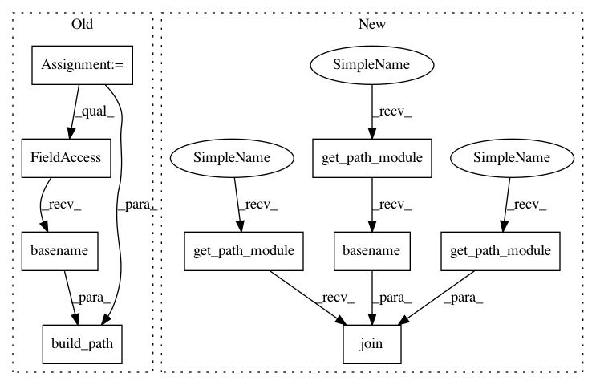

0811ae7cad3b1fa31434ca8ad259c65c3cac77fa,mlflow/store/gcs_artifact_repo.py,GCSArtifactRepository,log_artifact,#GCSArtifactRepository#Any#Any#,37
Before Change
(bucket, dest_path) = self.parse_gcs_uri(self.artifact_uri)
if artifact_path:
dest_path = build_path(dest_path, artifact_path)
dest_path = build_path(dest_path, os.path.basename(local_file))
gcs_bucket = self.gcs.Client().get_bucket(bucket)
blob = gcs_bucket.blob(dest_path)
blob.upload_from_filename(local_file)
After Change
def log_artifact(self, local_file, artifact_path=None):
(bucket, dest_path) = self.parse_gcs_uri(self.artifact_uri)
if artifact_path:
dest_path = self.get_path_module().join(dest_path, artifact_path)
dest_path = self.get_path_module().join(
dest_path, self.get_path_module().basename(local_file))
gcs_bucket = self.gcs.Client().get_bucket(bucket)
blob = gcs_bucket.blob(dest_path)
blob.upload_from_filename(local_file)
In pattern: SUPERPATTERN
Frequency: 3
Non-data size: 9
Instances
Project Name: mlflow/mlflow
Commit Name: 0811ae7cad3b1fa31434ca8ad259c65c3cac77fa
Time: 2019-01-04
Author: 39497902+dbczumar@users.noreply.github.com
File Name: mlflow/store/gcs_artifact_repo.py
Class Name: GCSArtifactRepository
Method Name: log_artifact
Project Name: mlflow/mlflow
Commit Name: 0811ae7cad3b1fa31434ca8ad259c65c3cac77fa
Time: 2019-01-04
Author: 39497902+dbczumar@users.noreply.github.com
File Name: mlflow/store/s3_artifact_repo.py
Class Name: S3ArtifactRepository
Method Name: log_artifact
Project Name: mlflow/mlflow
Commit Name: 0811ae7cad3b1fa31434ca8ad259c65c3cac77fa
Time: 2019-01-04
Author: 39497902+dbczumar@users.noreply.github.com
File Name: mlflow/store/gcs_artifact_repo.py
Class Name: GCSArtifactRepository
Method Name: log_artifact
Project Name: mlflow/mlflow
Commit Name: 0811ae7cad3b1fa31434ca8ad259c65c3cac77fa
Time: 2019-01-04
Author: 39497902+dbczumar@users.noreply.github.com
File Name: mlflow/store/azure_blob_artifact_repo.py
Class Name: AzureBlobArtifactRepository
Method Name: log_artifact